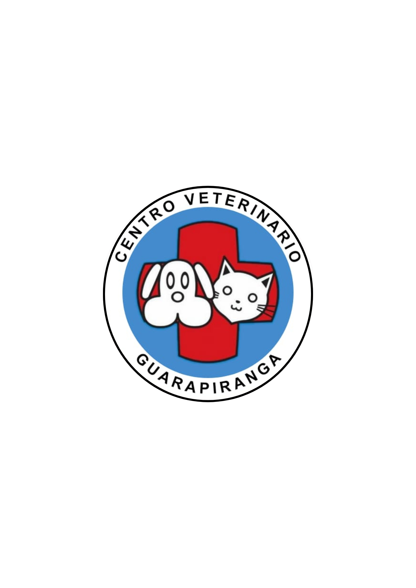
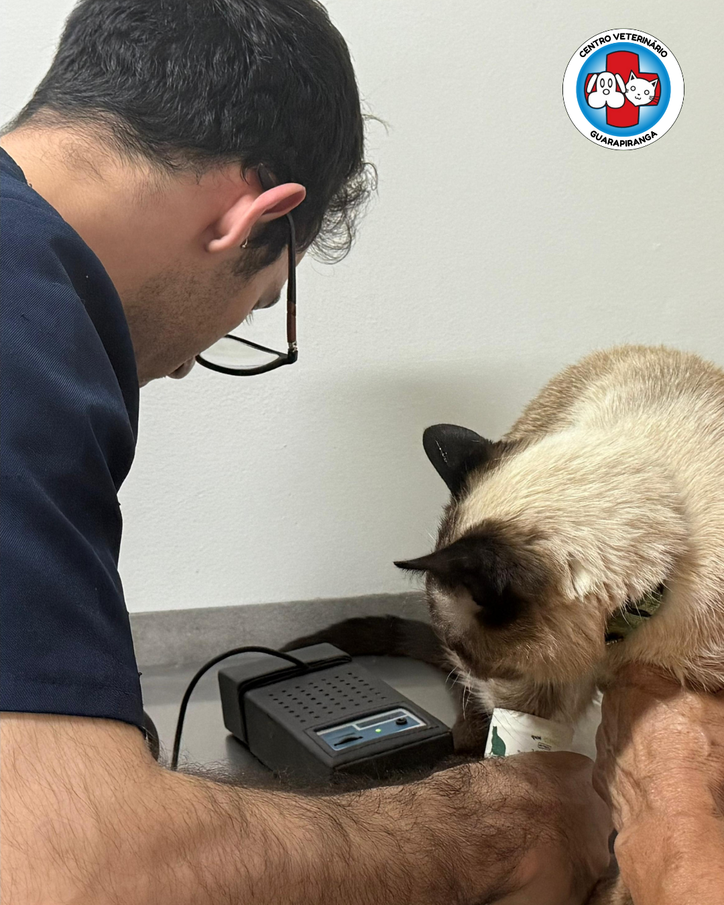
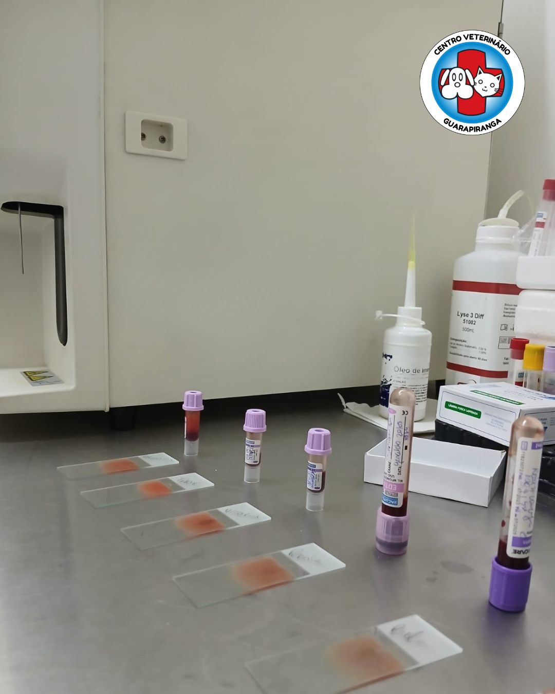
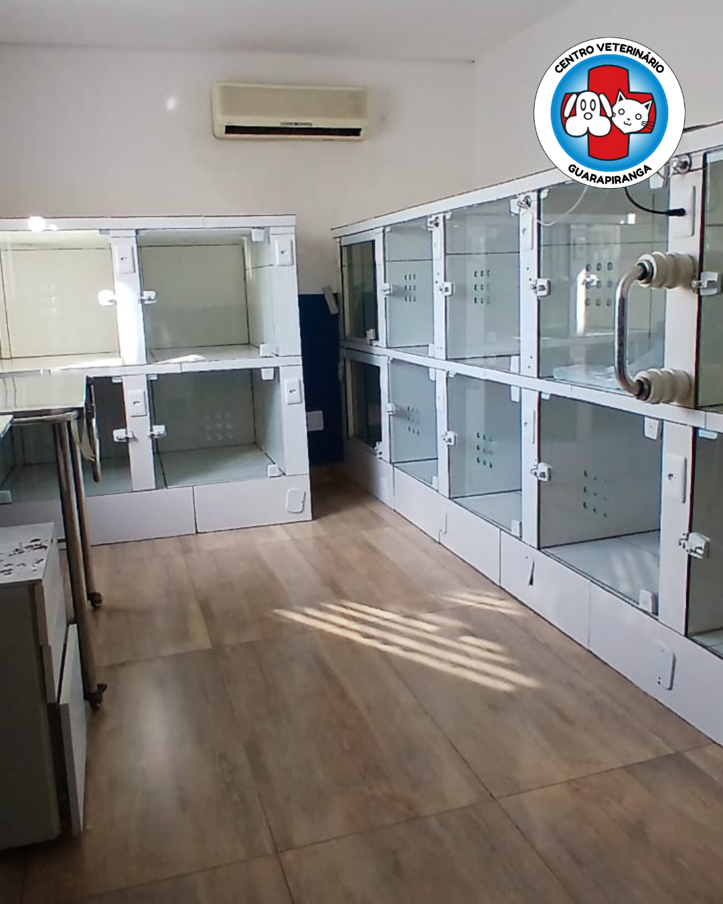
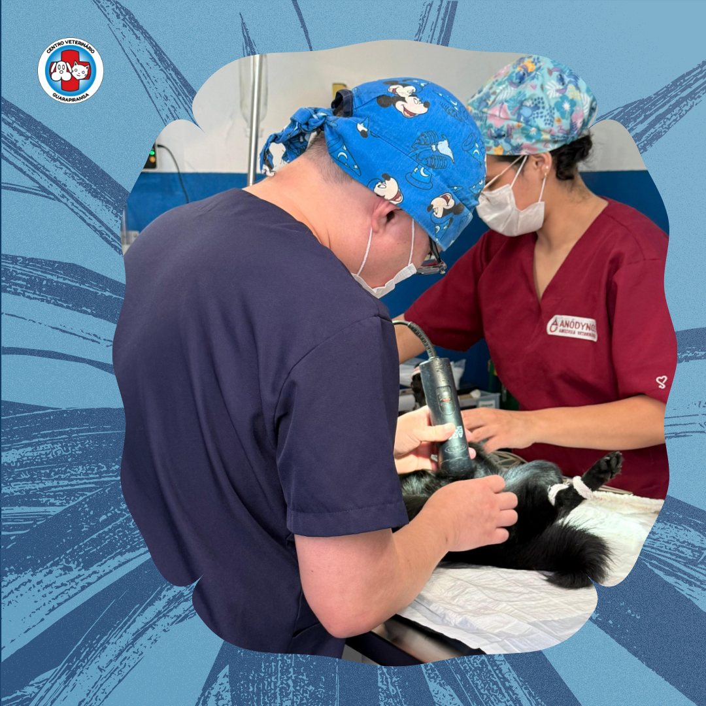
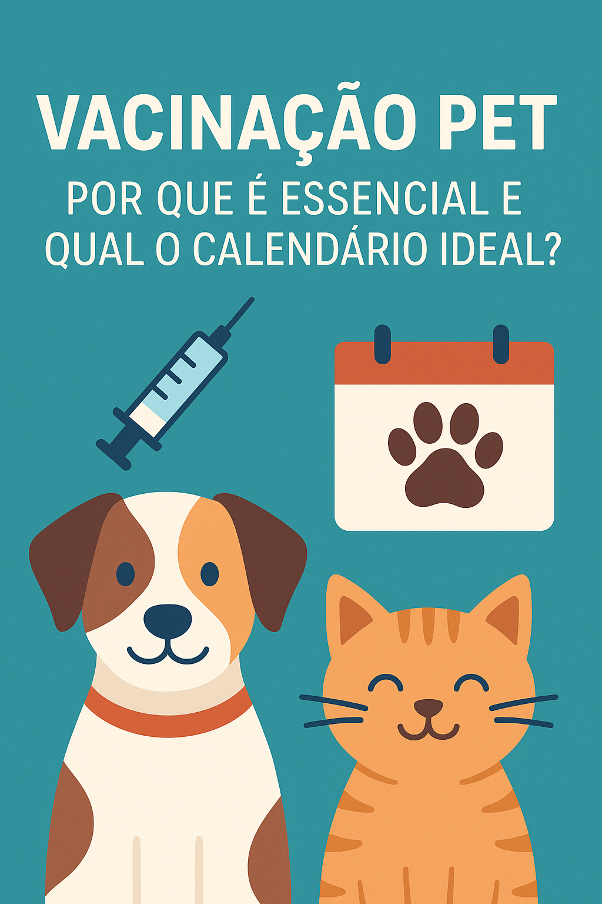
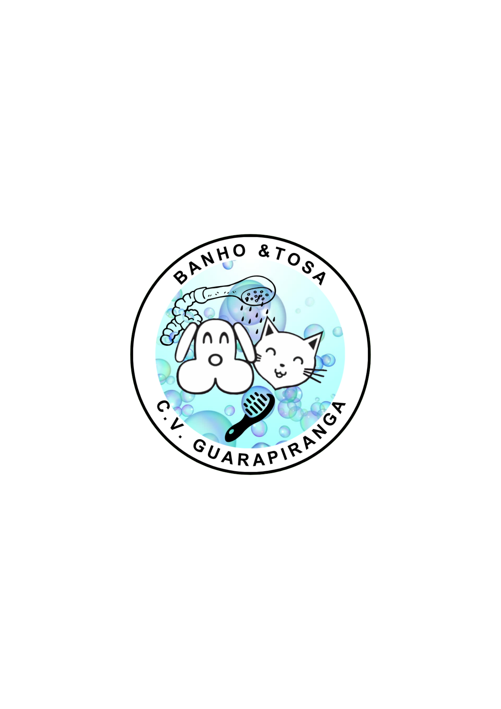

Atendimento 24h
Disponibilidade para orientar tutores e avaliar caes e gatos quando necessario.
Falar com a equipeConsultas, exames, internacao, cirurgia e orientacao clara para cuidar do seu pet com seguranca, acolhimento e criterio clinico.
Uma experiencia de cuidado que combina estrutura, orientacao responsavel e acolhimento para tutores em momentos de rotina ou preocupacao.
Em caso de duvida, fale com a equipe para entender o atendimento mais adequado para o seu cao ou gato.
Dificuldade respiratoria, convulsoes, sangramento, dor intensa, apatia importante, vomitos persistentes ou piora repentina devem orientar procura por avaliacao veterinaria.
Cuidado integrado para rotina, prevencao, avaliacao, exames e acompanhamento, com linguagem segura e sem promessa de resultado.

Disponibilidade para orientar tutores e avaliar caes e gatos quando necessario.
Falar com a equipe
Avaliacao veterinaria para acompanhar saude, rotina, idade e sinais do pet.
Saiba mais
Estrutura de apoio diagnostico para auxiliar a avaliacao da equipe veterinaria.
Saiba mais
Acompanhamento do paciente quando a conduta veterinaria indicar esse cuidado.
Saiba mais
Procedimentos devem ser orientados pela avaliacao e pelo protocolo da equipe.
Saiba mais
Protocolos de prevencao definidos conforme idade, historico e avaliacao do pet.
Saiba mais
Rotina de higiene e cuidado com observacao respeitosa do bem-estar animal.
Saiba maisClareza, acolhimento e responsabilidade orientam a forma como o Centro Veterinario Guarapiranga se comunica e cuida de tutores, caes e gatos.
Oferecer atendimento veterinario completo para caes e gatos, com disponibilidade 24h, estrutura de apoio diagnostico, internacao e cuidado humanizado, unindo clareza medica, acolhimento ao tutor e respeito ao bem-estar animal.
Ser reconhecido na Zona Sul de Sao Paulo como um centro veterinario de referencia em cuidado completo, confiavel e acolhedor para caes e gatos, integrando prevencao, atendimento clinico, diagnostico, internacao, cirurgia e comunicacao responsavel.
O CVG deve comunicar capacidade operacional com responsabilidade: a estrutura apoia a avaliacao veterinaria, mas nao substitui exame presencial nem garante resultado.
As avaliacoes publicas mudam ao longo do tempo. Cada atendimento depende da avaliacao individual do paciente e da orientacao da equipe veterinaria.
Reviews textuais so devem entrar futuramente via fonte oficial aprovada.
Escuta do tutor, observacao do pet e definicao dos proximos passos pela equipe.
Exames e laboratorio como suporte para a avaliacao veterinaria.
Cuidados indicados conforme necessidade do paciente e conduta profissional.
Comunicacao clara para orientar tutores durante rotina, duvida ou retorno.
Alguns sinais podem evoluir rapidamente e precisam de exame presencial para entender a causa e definir conduta. A orientacao ideal depende da avaliacao do animal.
Avenida Guarapiranga, 1993, Sao Paulo/SP. Atendimento 24h para caes e gatos quando a disponibilidade estiver atualizada nos canais oficiais. Contatos publicos consultados: WhatsApp (11) 98509-7715 e telefone (11) 5892-4282.